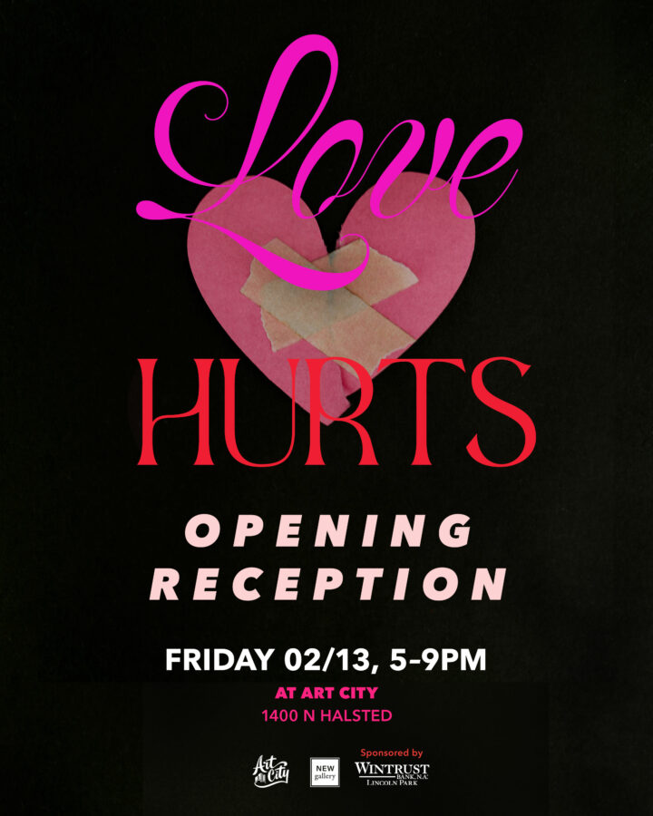

Love Hurts
For those the wronged and the heartbroken, Love Hurts will feature artwork embracing themes of longing, despair, and the realities of love beyond a Valentine’s day greeting card.
On view at Art City February 13 – March 13, 2026. Opening reception 5-9pm on February 13, 2026.